静止画モック（コスト0円・方向性確認用）。本制作では全カットを動画化し、文字は正本から載せ直します。
| B01 2秒 | 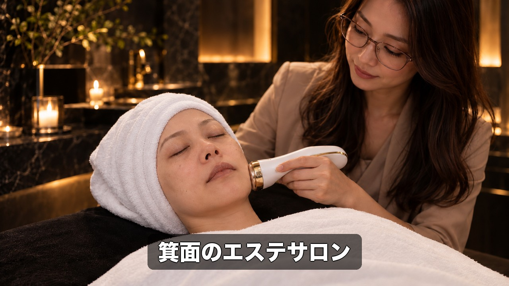 | 0秒でエステと分かる／機器のヘッド（主役ビフォー） 箕面のエステサロン |
| B02 3秒 | 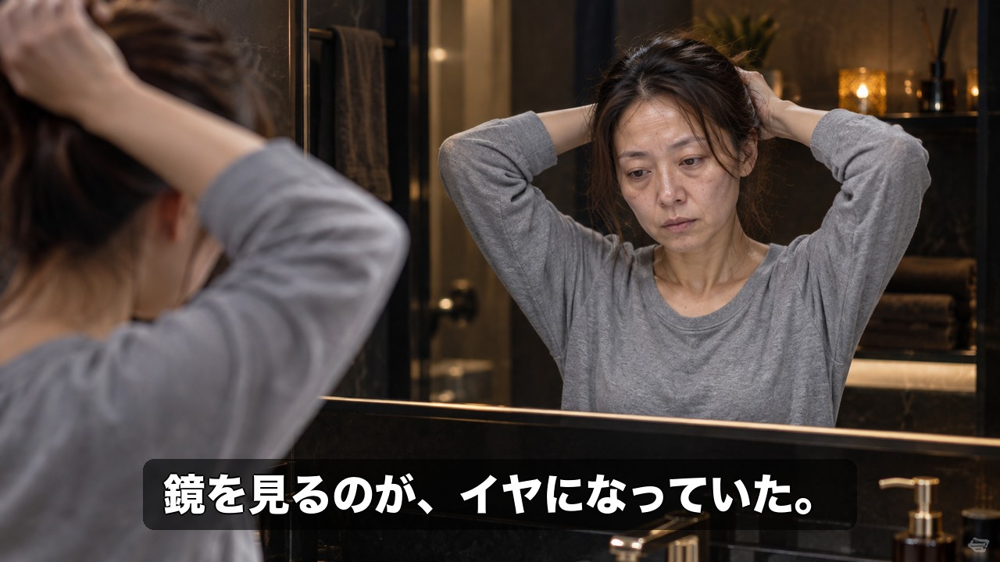 | 悩み①／朝の鏡から目をそらす 鏡を見るのが、イヤになっていた。 |
| B03 4秒 | 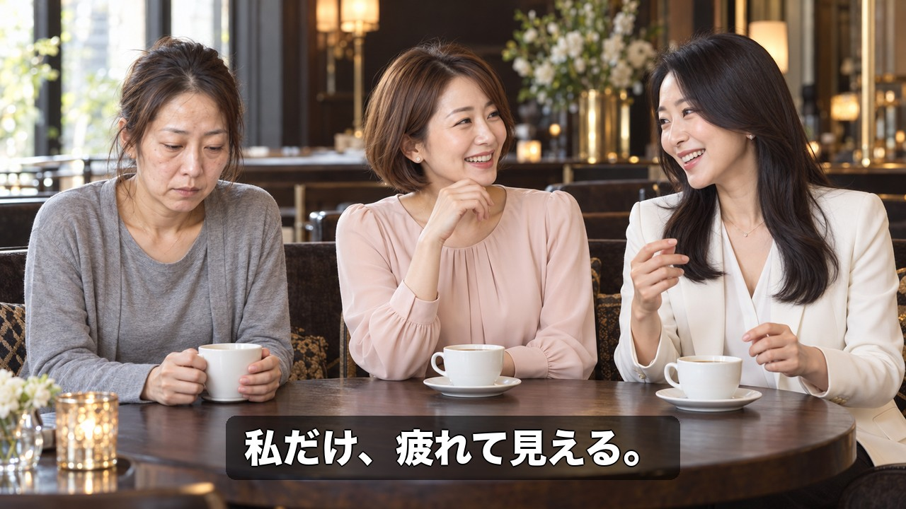 | 悩み②／華やかなママ友2人の端で俯く。子供なし 私だけ、疲れて見える。 |
| B04 3秒 | 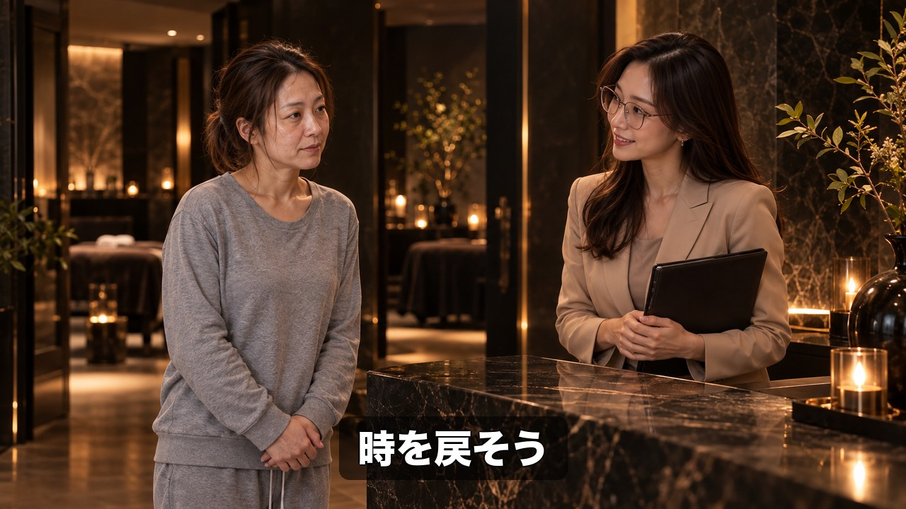 | サロン受付。施術者「いらっしゃいませ。」 時を戻そう |
| B05 3秒 | 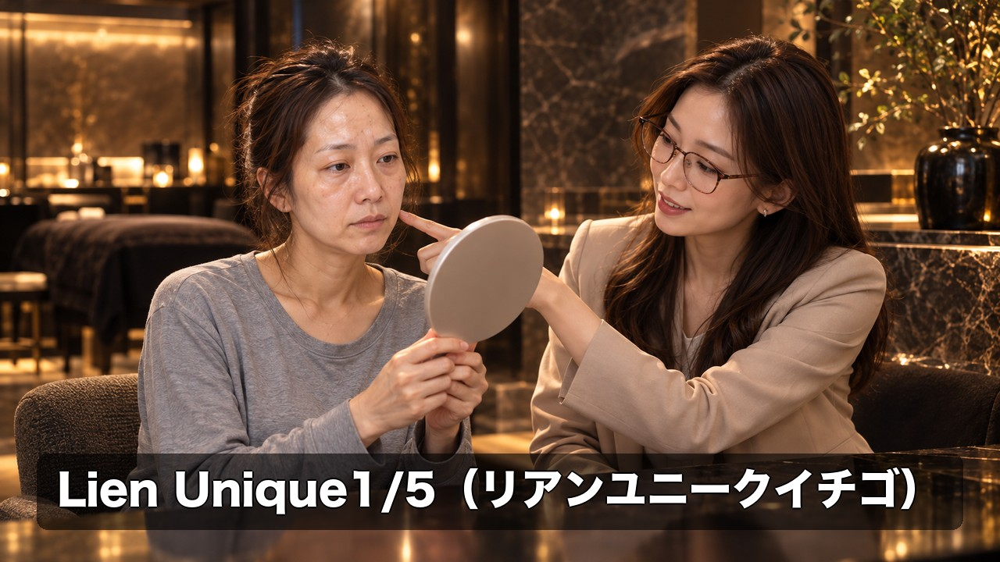 | カウンセリング・手鏡 Lien Unique1/5（リアンユニークイチゴ） |
| B06 4秒 | 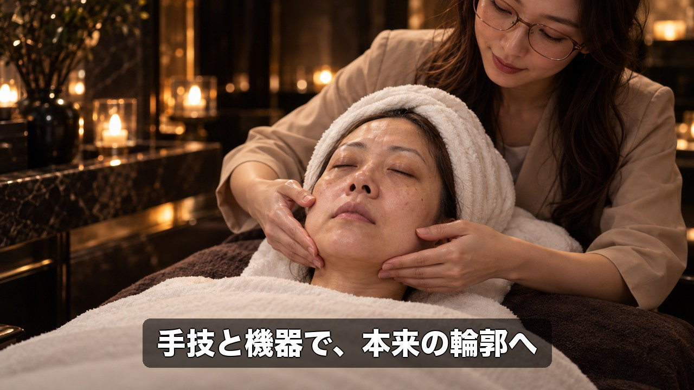 | 施術①手技 手技と機器で、本来の輪郭へ |
| B07 3秒 | 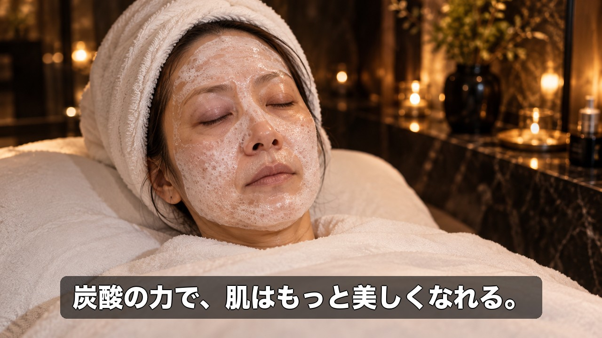 | 施術②炭酸パック 炭酸の力で、肌はもっと美しくなれる。 |
| B08 4秒 | 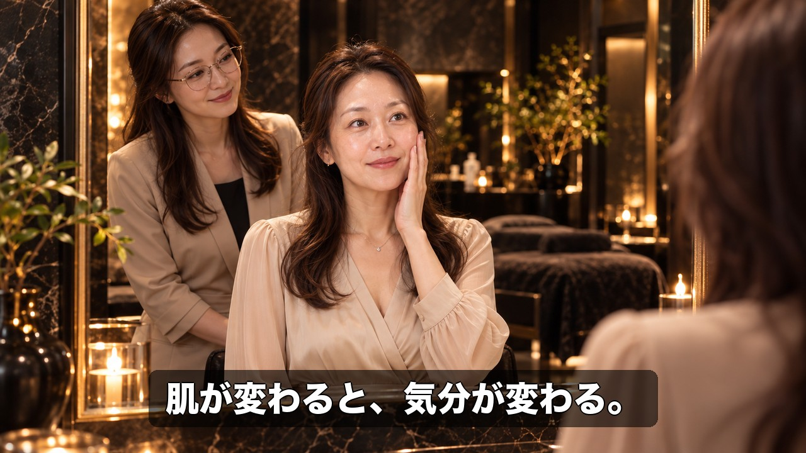 | 変化①／施術後の鏡（主役アフター）。主役「…戻ってる。」 肌が変わると、気分が変わる。 |
| B09 5秒 | 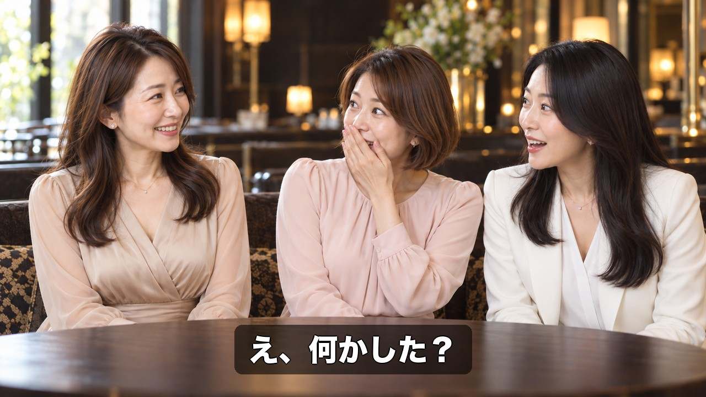 | 変化②／数週間後のカフェ、ママ友2人が驚く え、何かした？ |
| B10 7秒 | 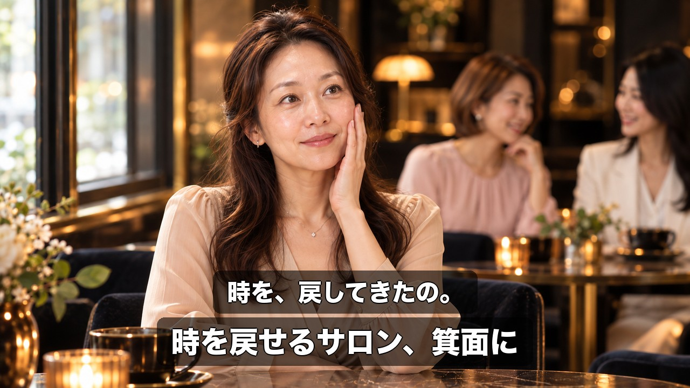 | 主役「時を、戻してきたの。」 時を、戻してきたの。／時を戻せるサロン、箕面に |
| B11 7秒 | 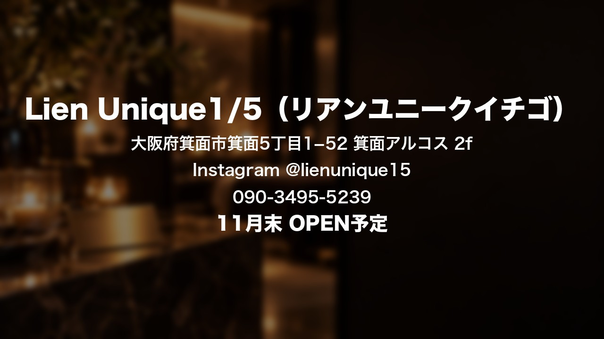 | エンドカード（A案と共通） Lien Unique1/5（リアンユニークイチゴ）／大阪府箕面市箕面5丁目1−52 箕面アルコス 2f／Instagram @lienunique15／090-3495-5239／11月末 OPEN予定 |